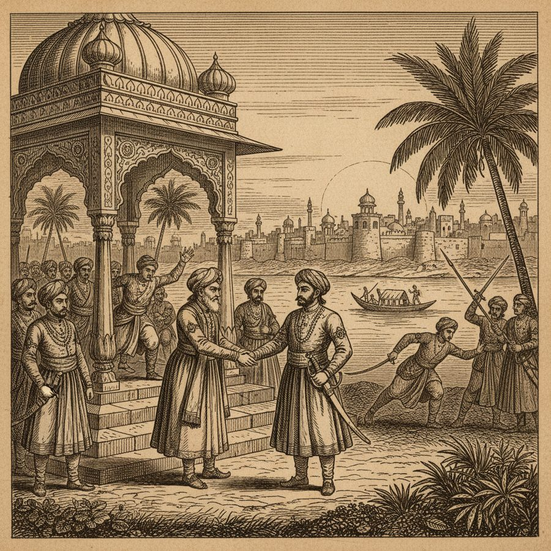
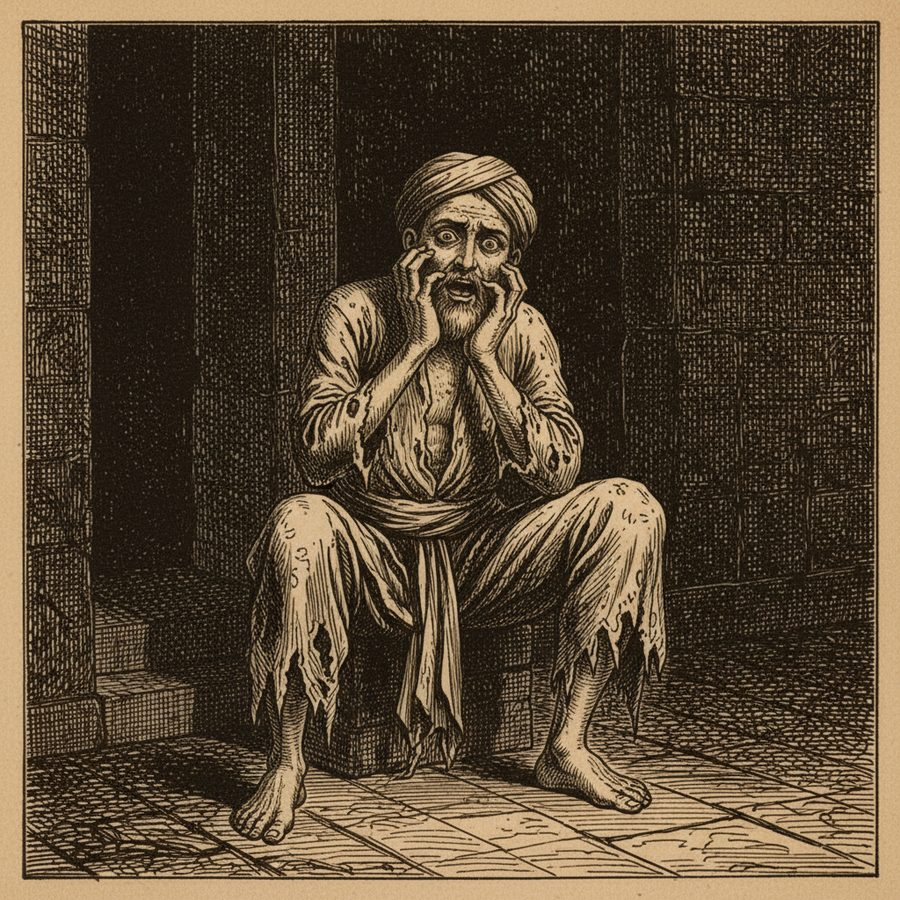
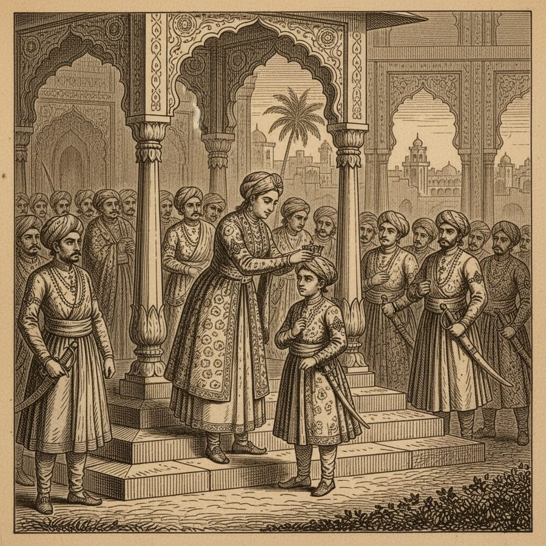
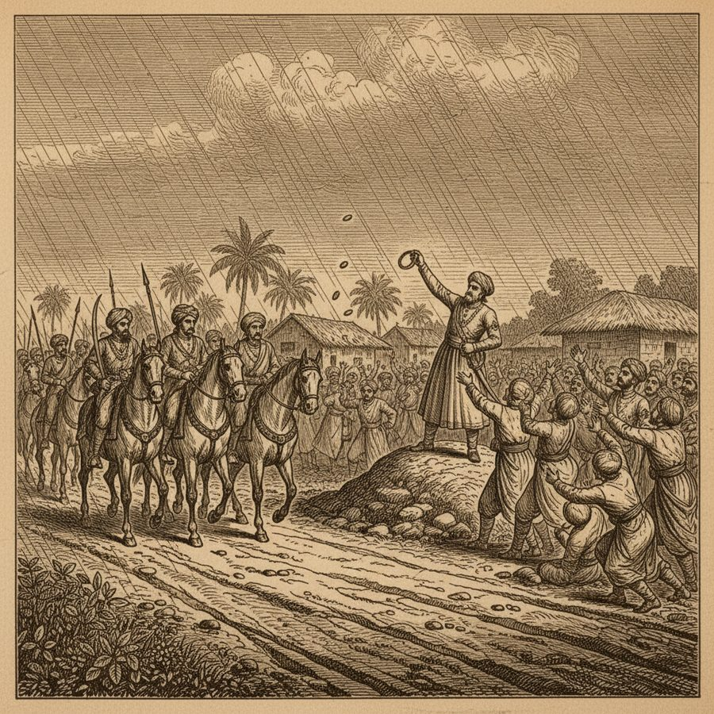
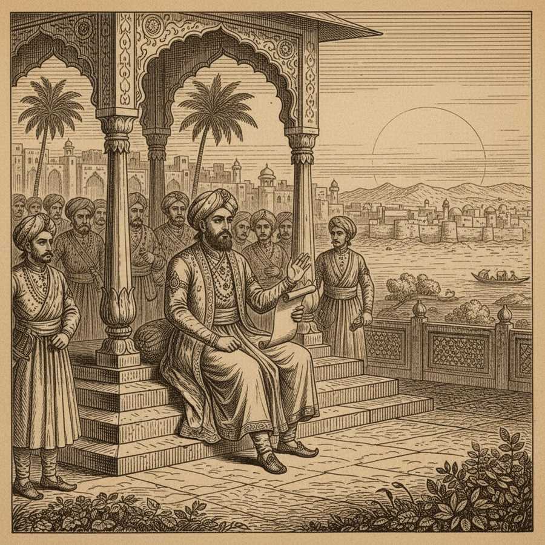
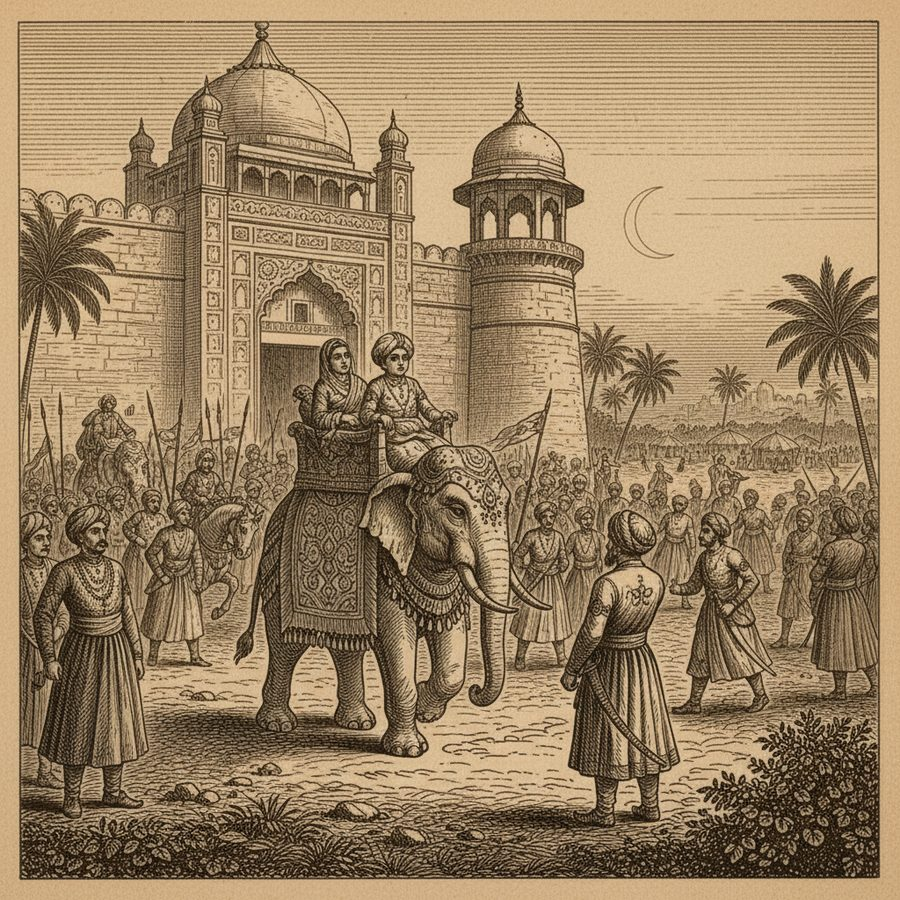
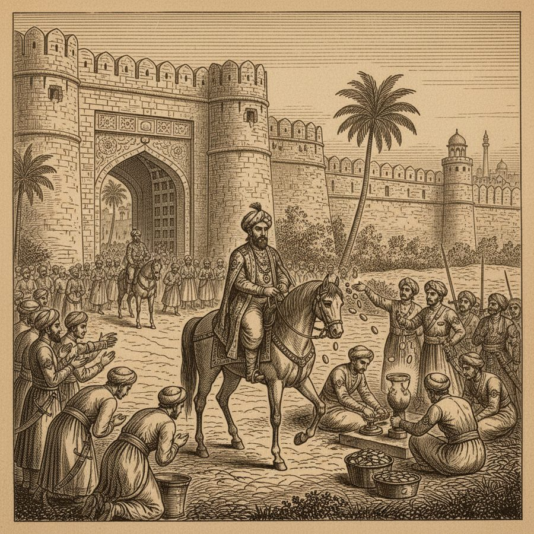
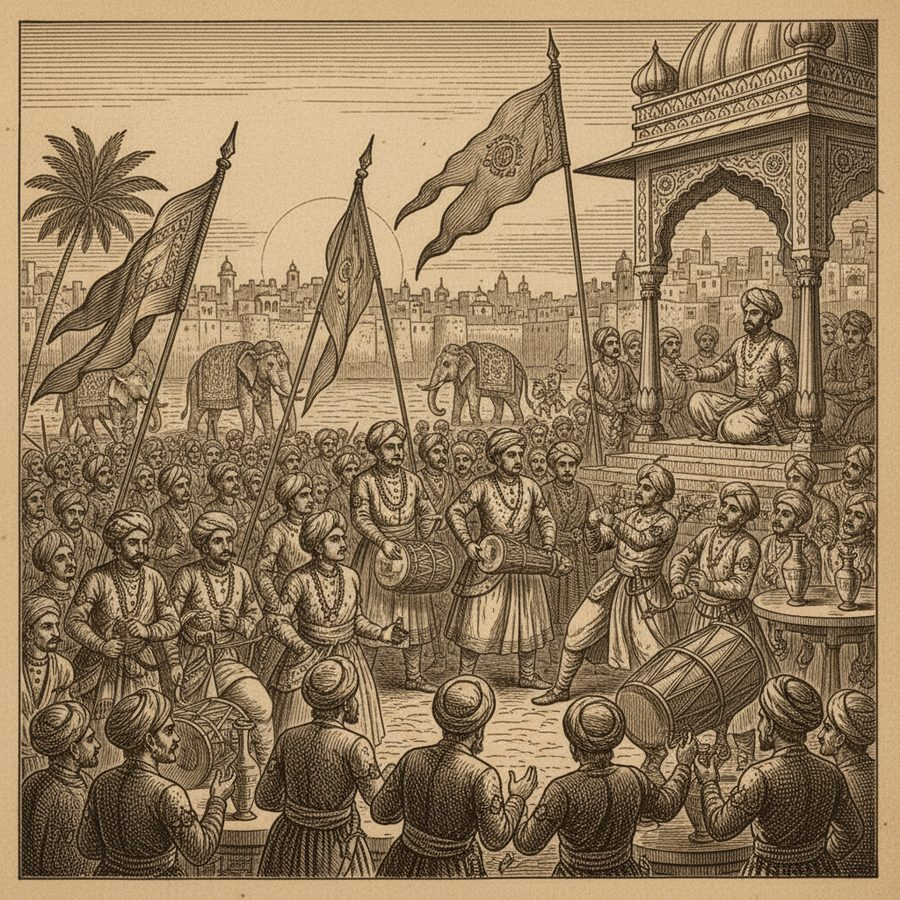
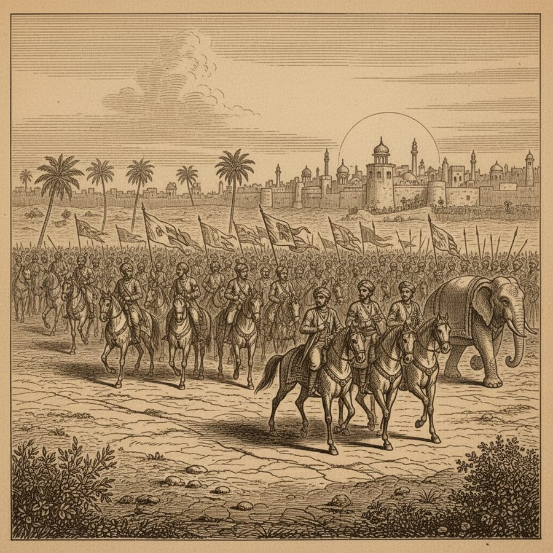

The Second Alexander — Gold from a Sling
A nephew who murdered his uncle, flung gold into crowds, and crowned himself 'the Second Alexander.'
1295. Alla ul dien had already secured his path to power the darkest way: his own uncle and benefactor, Sultan Jellal ul dien Firose, was murdered by his conspirators — men who, the chronicler notes, were afterwards driven mad, one crying out incessantly that the dead Sultan was cutting off his head. At Delhi the Queen regent Malleke Jehan raised her younger son to the throne, bypassing the true heir Arkilli Chan, who waited at Multan. Alla ul dien abandoned his Bengal expedition and marched on the capital — in the rainy season — buying loyalty as he went: 'wherever he encamped he amused himself with throwing gold from a sling among the people,' until 'a world of soldiers' gathered under his banners. Summoned home, Arkilli Chan answered with fatal clarity: 'The stream might have been diverted at its source; but when it became a river, no dams could oppose it.' The boy-sultan paraded his army before the walls, lost half of it to desertion that same night, and fled with his mother and treasure. Delhi's citizens crowded out to greet the usurper. He struck coin in his name, ascended the throne in the red palace, and drowned the memory of his crime in festivals — 'He who ought to have been hooted with detestation became the object of admiration to those who could not see the darkness of his deeds through the splendor of his magnificence.' Then, with six months' pay advanced to his army, he sent forty thousand horse to Multan to extirpate the race of the uncle he had murdered. Thus began the reign called Secunder Sani — 'the Second Alexander.'
Figures: Alla ul dien (Alauddin Khilji), Sultan Jellal ul dien Firose (his uncle), Malleke Jehan, Ruckun ul dien, Arkilli Chan
The story as a comic









Why it stands out
Alauddin Khilji would become the most powerful of the Delhi Sultans — the man who threw back the Mongols and took an empire's economy in his own hands. But the book shows how it started: a murdered uncle, a rain-season march, and gold slung into crowds like seed. The historian's verdict on the crowds who cheered him is one of the sharpest sentences in the whole volume.